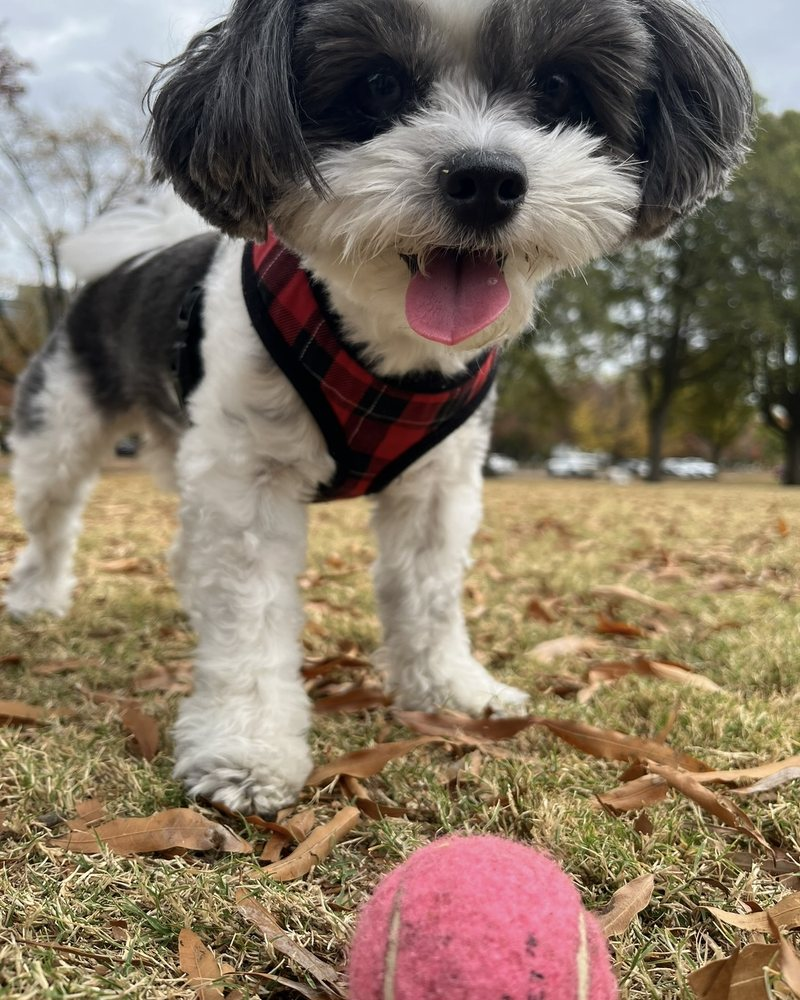

About
Hi, I'm Jason.
Certified end-of-life doula, and the person who'll be sitting with you.

My story
Death has always been in my space.
When I was a very young boy, I climbed into my grandfather's casket to lay with him. I didn't know it then, but I was already learning how to be near death without being afraid of it.
When I was 29, I lost my brother unexpectedly. He was 25. Since then I've walked alongside my father and my godmother through the end of their lives, and now my uncle as he makes his own transition.
Somewhere along the way I noticed that death always seemed to find its way into my life. Instead of turning away, I started to lean in. Each time, I showed up a little more present and a little more capable.
Why this work
An honor and a privilege
When I learned that end-of-life doulas were a real thing, and that you could train to do this work, I signed up. I completed the University of Vermont's End-of-Life Doula program, and its Companion Animal End-of-Life Doula program too.
It's an honor and a privilege to walk alongside someone in this space. I've seen firsthand the difference it makes to feel seen, heard and valued, not just to the last breath but beyond. That's what I bring with me.
I want to be in this space, and I want to do the best job in this role that I possibly can.
"It's not a job. It's just who I am."
I can be whatever a person needs in this space and time, even if that's just someone to sit in it with them.
The crew at home
Peanut, Buster and Juju



My Shih Tzus, plus Juju, on loan from my girlfriend. They're a big part of why I trained in companion animal care too.
Training and membership
The details
University of Vermont, 2025
University of Vermont, 2026
A national community of end-of-life doulas
Years in film, live events and teaching, which is where the legacy films come from
Insured as an end-of-life doula. Doulas provide non-medical support.